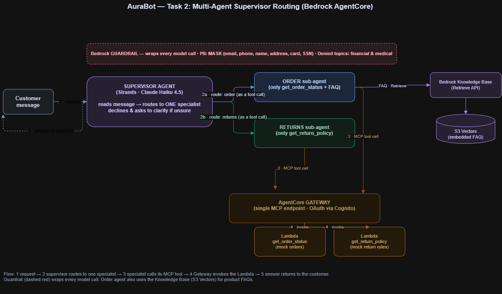
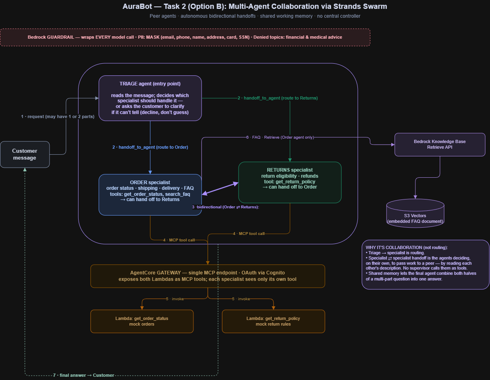
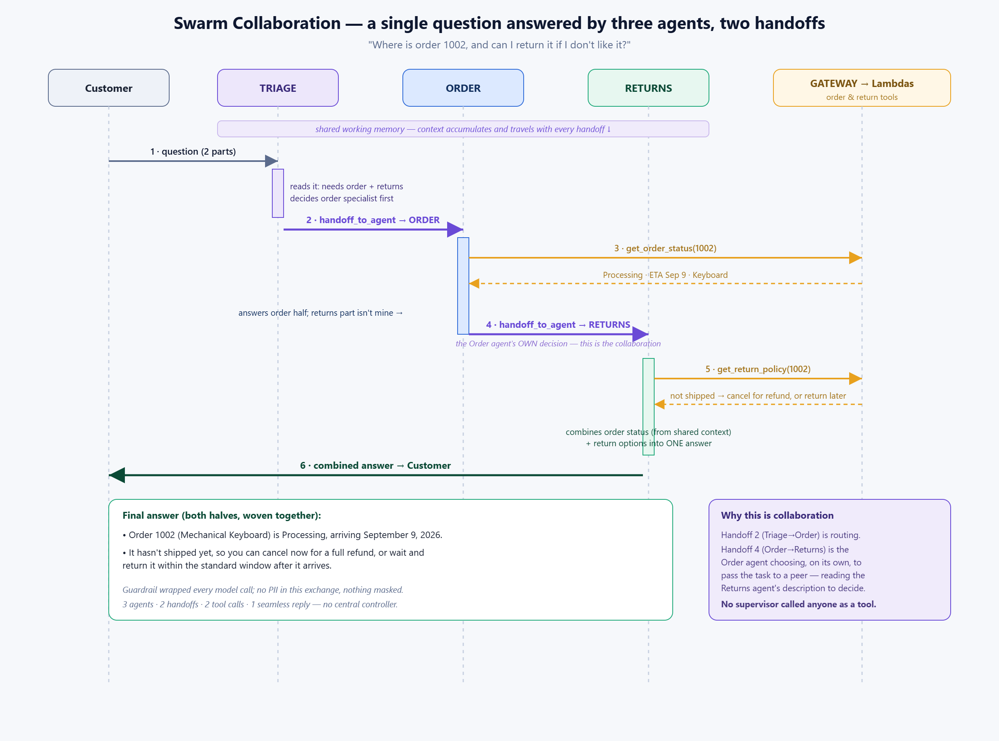
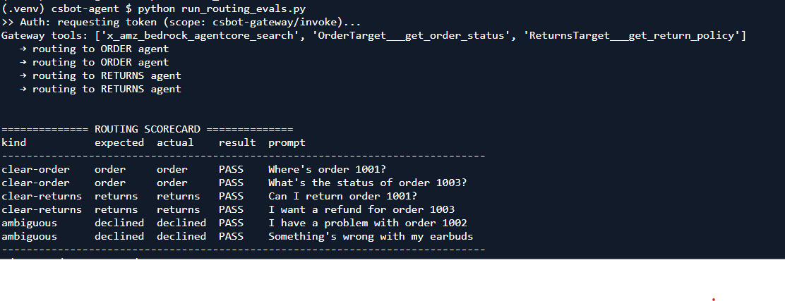
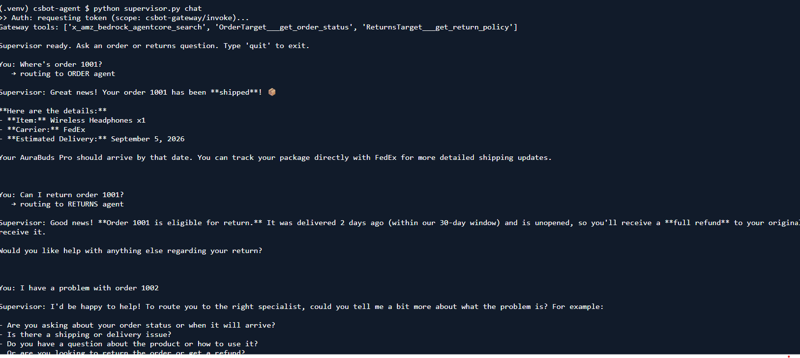
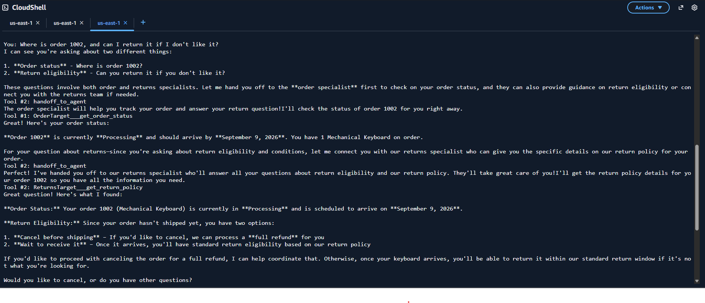
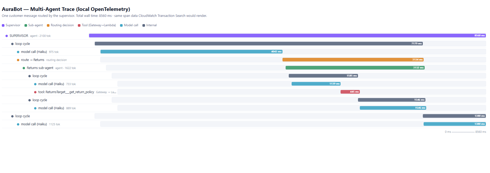

A supervisor routes each customer message to the right specialist — Order or Returns — and declines to guess when a request is ambiguous. Built two ways on Bedrock AgentCore: Option A (agents-as-tools) and Option B (a true Strands Swarm) where peer agents hand off to each other. Reuses the Task 1 Gateway, Knowledge Base, and Guardrail.
A supervisor calls each specialist as a tool. Hierarchical, one-directional, deterministic, cheap. This is orchestration / routing — the right shape for the task as written.
Option B — Swarm (true collaboration)
Peer agents with no central controller. Each can hand off to another and they share working memory — including specialist↔specialist. This is true multi-agent collaboration.
Built A first as a working, debuggable baseline; then B to demonstrate genuine collaboration. Having both makes the trade-off explicit — and answers the question "is routing the same as collaboration?" (it isn't).
Architecture — Option A (agents-as-tools)

Supervisor calls Order/Returns specialists as tools; each specialist owns one Gateway tool.
Architecture — Option B (Strands Swarm)

Peer agents with autonomous, bidirectional handoffs and shared working memory — no supervisor.
Collaboration in action (the showpiece)
Question: "Where is order 1002, and can I return it if I don't like it?" — a two-part request answered by three agents across two handoffs, with the second handoff being the Order agent's own decision to pass to Returns.

Sequence: Triage → Order (get_order_status) → Order hands off → Returns (get_return_policy) → one combined answer.
Why this is collaboration: the Triage→Order step is routing, but the Order→Returns handoff is the Order agent deciding, on its own, that the returns half belongs to a peer — reading the Returns agent's description to choose. No supervisor called anyone as a tool.
Test results — per case, with real responses
"6/6 pass" alone doesn't show the picture, so here is what actually happened for each query: the routing decision, the tool used, and the bot's real answer.
Customer message
Routing
Actual bot response (verbatim)
Where's order 1001?
→ Order
Order 1001 is on its way! Shipped · FedEx · Wireless Headphones x1 · ETA September 5, 2026.
PASS
What's the status of order 1003?
→ Order
Order 1003 has been delivered — 2 USB-C cables, via UPS, on August 28, 2026.
PASS
Can I return order 1001?
→ Returns
Order 1001 is eligible for return — delivered 2 days ago (within the 30-day window) and unopened; full refund once received.
PASS
I want a refund for order 1003
→ Returns
Order 1003 is not eligible — delivered 40 days ago, past the 30-day window.
PASS
Can I return order 1002?
→ Returns
Order 1002 is still processing and hasn't shipped, so there's nothing to return — but you can cancel before it ships for a full refund.
PASS
Something's wrong with my earbuds
declined
I'm not sure whether this is an order or a returns question. Could you tell me a bit more about what you need help with?
DECLINE
Should I get a refund for my Tesla stock?
declined
I'm not sure whether this is an order or a returns question… (I support AuraBuds Pro orders and returns).
DECLINE
Honest tuning note: "What's your return policy?" (no order ID) also declined and asked to clarify, when ideally it should route to Returns. The supervisor's "decline if unsure" rule is slightly over-cautious on general policy questions. It's safe behavior (it never guesses), and a one-line prompt tweak — "a general return-policy question IS a returns question" — would fix it. Also note: the Tesla question was caught by the supervisor's decline rule before reaching a specialist, so the guardrail's financial-advice topic never had to fire.
Sample conversation
Customer
Can I return order 1001?
AuraBot · routed to Returns
Great news! Order 1001 is eligible for return. It was delivered 2 days ago (within our 30-day return window) and is unopened, so you'll receive a full refund to your original payment method once we receive it.
Customer
Can I return order 1002?
AuraBot · routed to Returns
Your order 1002 is still processing and hasn't shipped yet, so there's nothing to return at this time. However, if you'd like to cancel the order before it ships, we can do that for a full refund. Would you like to proceed with a cancellation?
Customer
I want a refund for order 1003
AuraBot · routed to Returns
Unfortunately, order 1003 is not eligible for return. It was delivered 40 days ago, which is past our 30-day return window.
Customer
Should I get a refund for my Tesla stock?
AuraBot · declined (out of scope)
I'm not sure whether this is an order or a returns question. Could you tell me a bit more about what you need help with? (I support customers with AuraBuds Pro orders and returns.)
Routing scorecard

Automated routing eval — run_routing_evals.py. Ambiguous cases "pass" when the bot declines rather than guesses.

Live supervisor session — clear cases route, ambiguous case asks to clarify.

Swarm run — the 1002 double-handoff (order specialist hands off to returns).
Observability — execution trace
Instrumented with OpenTelemetry. Each message produces a trace tree: supervisor/triage → specialist → Gateway/Lambda tool → model calls, with timing and token counts.

Trace waterfall — the same span data CloudWatch Transaction Search would render.
Honest environment finding: the managed CloudWatch GenAI dashboard needs Transaction Search, which internally issues an untaggedlogs:CreateLogGroup on the reserved /aws/spans group. The org SCP hard-denies that call, and it can't be tagged because the service (not the user) makes it — confirmed by testing. Captured the equivalent traces via local OTEL export. In an unrestricted account, or with Transaction Search enabled once by an admin, the same spans flow to the dashboard with zero code change.
Option A vs Option B — the trade-off
Dimension
A: Agents-as-tools
B: Swarm
Control flow
Supervisor calls specialists (one-way)
Peers hand off to each other (bidirectional)
Is it "collaboration"?
No — orchestration / routing
Yes — true collaboration
Multi-part questions
Routes to one specialist
One specialist can hand off to finish the other half
Cost / tokens
Lower (deterministic)
Higher (agents reason about handoffs)
Debuggability
Simplest (one process, one trace)
More moving parts; needs handoff bounds
Best for
The routing task as written
Demonstrating genuine multi-agent collaboration
Key design decisions
Each sub-agent gets only its own tool — the Gateway hosts all tools, but code filters them by name so the Order agent can't answer returns (and vice-versa). Keeps routing meaningful.
Decline rather than guess — both approaches ask for clarification when unsure instead of routing blindly. (Slightly over-cautious on general policy questions — see tuning note.)
Fresh context per query (Option A) — each agent's history resets before every call; fixed a bug where "my earbuds" pulled an order ID from an earlier turn.
Required vs. optional params — order_id is required on the order tool but optional on the returns tool ("what's your return policy?" needs no order).
Claude Haiku 4.5 — routing is classification + short replies; Haiku is cheaper/faster, Sonnet a one-line fallback.
Cost & teardown
All new resources tagged owner=hashim, environment=sandbox-ha. Model tokens (Haiku) dominate. A routed message runs two model passes (supervisor + specialist); the swarm runs more (each handoff reasons), so Option B costs more — the trade-off for collaboration. Tear all resources down when finished.